Interconnexion de deux sites d'entreprise par VPN IPsec IKEv2 site-à-site (FortiGate) avec réseau LAN redondant HSRP et routage OSPF
Problématique
| Contexte | Problématique | Objectif |
|---|---|---|
| Une entreprise exploite deux sites, chacun avec son propre réseau local segmenté par services (RH, comptabilité, marketing, IT, VoIP). | ✗ Les deux sites sont des réseaux distincts (192.168.0.0/16 et 172.16.0.0/16) | |
| ✗ Le lien WAN entre eux n'est pas fiable pour transporter du trafic interne en clair | ||
| ✗ Une panne d'un seul commutateur de distribution ne doit pas couper un bâtiment | ✅ Relier les deux sites par un tunnel chiffré IPsec IKEv2 | |
| ✅ Faire communiquer les LAN internes des deux sites de bout en bout | ||
| ✅ Garantir la redondance des passerelles par VLAN (HSRP) | ||
| ✅ Propager le routage interne en OSPF |
Architecture globale
Chaque site suit une architecture hiérarchique à trois niveaux (accès, distribution, cœur), avec un pare-feu FortiGate en bordure. Les deux FortiGate établissent entre leurs interfaces WAN un tunnel IPsec IKEv2.
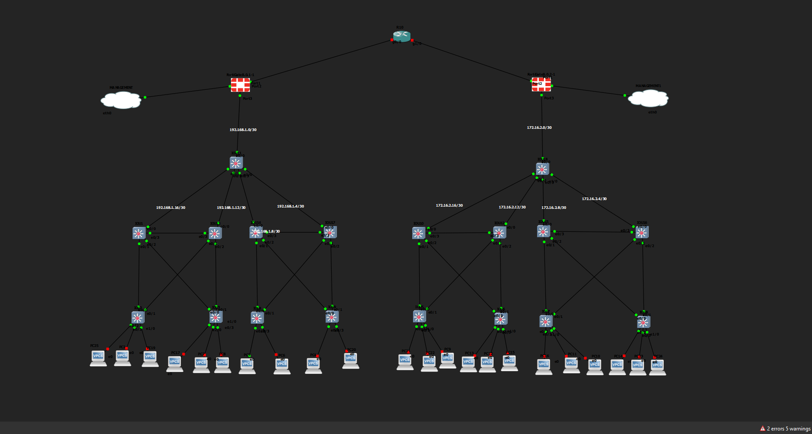
Topologie du laboratoire dans l'environnement de simulation : les deux sites, leurs pare-feu FortiGate et le lien d'interconnexion
Plan d'adressage
Site principal (192.168.0.0/16)
| Bâtiment | VLAN | Nom | Réseau | Passerelle virtuelle (HSRP) |
|---|---|---|---|---|
| Bât. A | 10 | RH | 192.168.10.0/24 |
192.168.10.1 |
| Bât. A | 20 | Compta | 192.168.20.0/24 |
192.168.20.1 |
| Bât. A | 30 | Marketing | 192.168.30.0/24 |
192.168.30.1 |
| Bât. B | 60 | IT | 192.168.60.0/24 |
192.168.60.1 |
| Bât. B | 70 | DEV | 192.168.70.0/24 |
192.168.70.1 |
| Bât. B | 80 | MATERIEL | 192.168.80.0/24 |
192.168.80.1 |
| Bât. A et B | 50 | VOIP | 192.168.50.0/24 |
n/a (adresses réelles des distributions : .254, .253, .252, .251) |
Second site (172.16.0.0/16)
| Bâtiment | VLAN | Nom | Réseau | Passerelle virtuelle (HSRP) |
|---|---|---|---|---|
| Bât. C | 10 | RH | 172.16.10.0/24 |
172.16.10.1 |
| Bât. C | 20 | Compta | 172.16.20.0/24 |
172.16.20.1 |
| Bât. C | 30 | Marketing | 172.16.30.0/24 |
172.16.30.1 |
| Bât. D | 60 | IT | 172.16.60.0/24 |
172.16.60.1 |
| Bât. D | 70 | DEV | 172.16.70.0/24 |
172.16.70.1 |
| Bât. D | 80 | MATERIEL | 172.16.80.0/24 |
172.16.80.1 |
| Bât. C et D | 50 | VOIP | 172.16.50.0/24 |
n/a (adresses réelles des distributions : .254, .253, .252, .251) |
Liaisons routées et pare-feu
Les liaisons entre le cœur et chaque commutateur de distribution sont des liens routés point à point en /30. Le cœur est relié au FortiGate par un /30 dédié.
| Liaison | Site principal | Second site |
|---|---|---|
Cœur e0/1 ↔ distribution 1 e0/0 |
192.168.1.16/30 (cœur .17, distribution .18) |
172.16.2.16/30 (cœur .17, distribution .18) |
Cœur e0/2 ↔ distribution 2 e0/0 |
192.168.1.12/30 (cœur .13, distribution .14) |
172.16.2.12/30 (cœur .13, distribution .14) |
Cœur e0/3 ↔ distribution 3 e0/0 |
192.168.1.8/30 (cœur .9, distribution .10) |
172.16.2.8/30 (cœur .9, distribution .10) |
Cœur e1/0 ↔ distribution 4 e0/0 |
192.168.1.4/30 (cœur .5, distribution .6) |
172.16.2.4/30 (cœur .5, distribution .6) |
Cœur e0/0 ↔ FortiGate (LAN) |
192.168.1.0/30 (FortiGate .1, cœur .2) |
172.16.2.0/30 (FortiGate .1, cœur .2) |
| FortiGate, interface WAN | 20.20.20.2/30 |
30.30.30.2/30 |
Conception du réseau local
Accès
Chaque bâtiment compte deux commutateurs d'accès (MAIN_ACC_1 à 4, 2ND_ACC_1 à 4). Chacun est relié aux deux commutateurs de distribution de son bâtiment par des trunks 802.1Q (e0/0 et e0/1) et porte les ports d'accès des VLAN du bâtiment. Le VLAN VOIP (50) est déclaré sur tous les commutateurs d'accès.
Distribution et redondance des passerelles (HSRP)
Chaque bâtiment dispose de deux commutateurs de distribution de niveau 3 qui portent les interfaces VLAN (SVI). Les deux se partagent une passerelle virtuelle .1 par VLAN grâce à HSRP, avec preempt activé. Les rôles actifs sont répartis entre les deux commutateurs, VLAN par VLAN (priorité 110 pour l'actif, 100 pour le secours), ce qui répartit la charge au lieu de laisser un commutateur au repos.
L'état HSRP du bâtiment A est vérifié sur chacune des deux distributions avec la commande show standby brief.
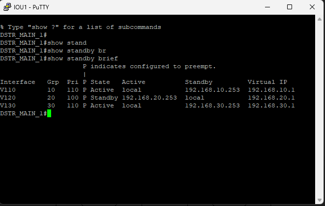
Sortie de la commande “Show stanbdy briefe sur DSTR_MAIN_1”
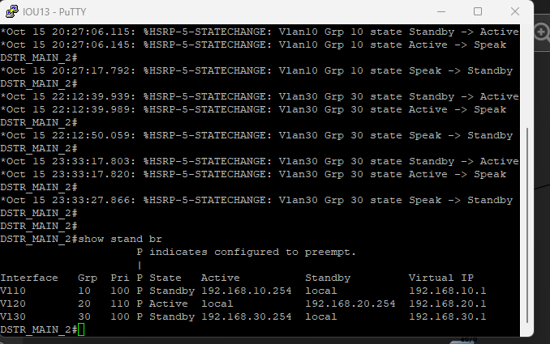
Sortie de la commande “Show stanbdy briefe sur DSTR_MAIN_2”
| Bâtiment | VLAN | Distribution active (priorité 110) | Distribution de secours (priorité 100) |
|---|---|---|---|
| A (site principal) | 10 RH | DSTR_MAIN_1 |
DSTR_MAIN_2 |
| A | 20 Compta | DSTR_MAIN_2 |
DSTR_MAIN_1 |
| A | 30 Marketing | DSTR_MAIN_1 |
DSTR_MAIN_2 |
| B (site principal) | 60 IT | DSTR_MAIN_3 |
DSTR_MAIN_4 |
| B | 70 DEV | DSTR_MAIN_4 |
DSTR_MAIN_3 |
| B | 80 MATERIEL | DSTR_MAIN_3 |
DSTR_MAIN_4 |
| C (second site) | 10 RH | DSTR_2ND_1 |
DSTR_2ND_2 |
| C | 20 Compta | DSTR_2ND_2 |
DSTR_2ND_1 |
| C | 30 Marketing | DSTR_2ND_1 |
DSTR_2ND_2 |
| D (second site) | 60 IT | DSTR_2ND_3 |
DSTR_2ND_4 |
| D | 70 DEV | DSTR_2ND_4 |
DSTR_2ND_3 |
| D | 80 MATERIEL | DSTR_2ND_3 |
DSTR_2ND_4 |
Exemple de configuration HSRP (VLAN 10 sur DSTR_MAIN_1) :
int vlan 10
ip address 192.168.10.254 255.255.255.0
no shutdown
standby 10 ip 192.168.10.1
standby 10 priority 110
standby 10 preempt
Services DHCP
Les pools DHCP des VLAN de données sont définis sur un commutateur de distribution par bâtiment (DSTR_MAIN_1 et DSTR_MAIN_3 sur le site principal, DSTR_2ND_1 et DSTR_2ND_3 sur le second site). Chaque pool distribue la passerelle virtuelle HSRP .1 comme routeur par défaut.
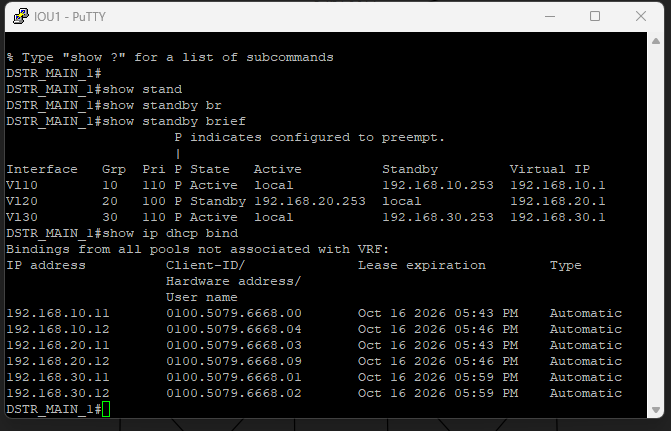
Commande show ip dhcp binding sur DSTR_MAIN_1 : adresses attribuées par les pools DHCP aux postes du bâtiment A
Routage interne (OSPF)
Chaque site exécute son propre processus OSPF dans l'aire 0 : processus 10 sur le site principal, processus 20 sur le second site.
- Les liaisons cœur–distribution sont configurées en
ip ospf network point-to-point. - Sur les distributions,
passive-interface defaultlimite OSPF aux seules interfaces routées vers le cœur. - Le cœur annonce une route par défaut aux distributions (
default-information originate), appuyée sur une route statique0.0.0.0/0vers le FortiGate (192.168.1.1sur le site principal,172.16.2.1sur le second site). - L'interface du cœur vers le FortiGate (
e0/0) est passive : aucun voisinage OSPF n'est établi avec le pare-feu.
Conséquence : tout trafic destiné à l'autre site suit la route par défaut jusqu'au FortiGate local, qui l'envoie dans le tunnel IPsec.
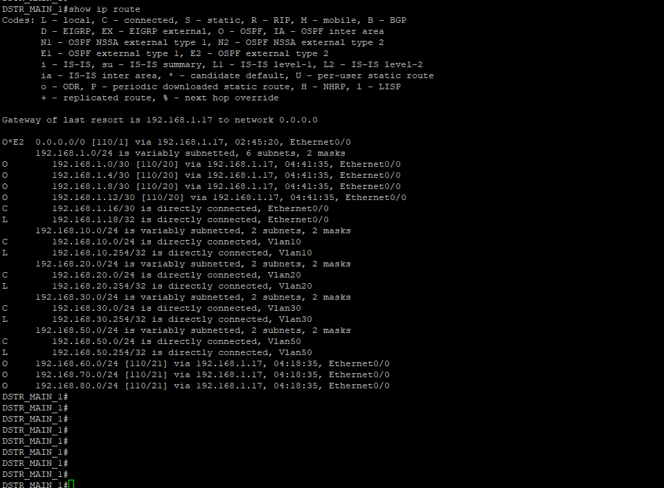
Commande show ip route sur DSTR_MAIN_1 : table de routage de la distribution avec la route par défaut annoncée par le cœur en OSPF
Extrait de configuration du cœur du site principal :
router ospf 10
network 192.168.1.0 0.0.0.255 area 0
passive-interface e 0/0
default-information originate
ip route 0.0.0.0 0.0.0.0 192.168.1.1
VPN IPsec site-à-site (IKEv2)
Le tunnel relie les deux FortiGate à travers leurs interfaces WAN (20.20.20.2/30 côté site principal, 30.30.30.2/30 côté second site) et fait transiter le trafic entre les deux LAN : 192.168.0.0/16 d'un côté, 172.16.0.0/16 de l'autre. Le protocole d'échange de clés est IKEv2.
Les captures de cette section montrent la configuration du FortiGate du second site (site B). Le même principe s'applique côté site principal.
Négociation du tunnel : phases 1 et 2
La phase 1 définit l'authentification et la négociation IKEv2 entre les deux FortiGate. La phase 2 définit la protection du trafic qui traverse ensuite le tunnel.
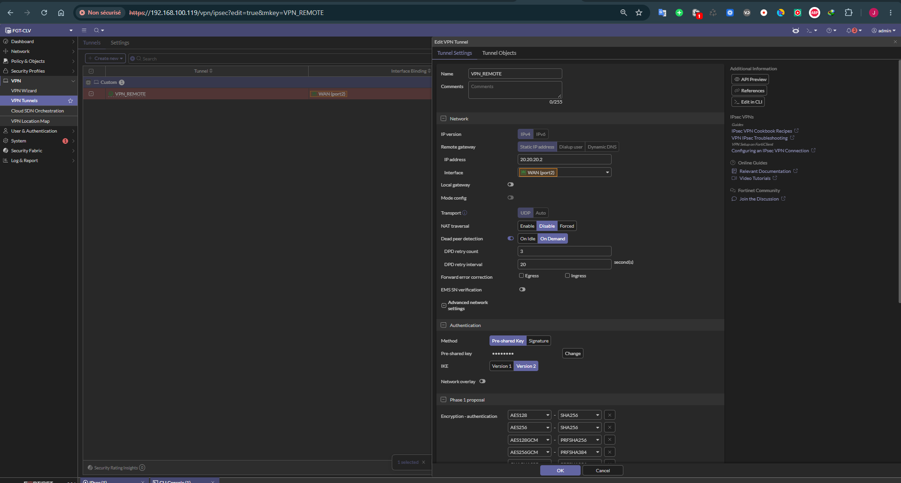
PHASE 1 IPSEC SITE B
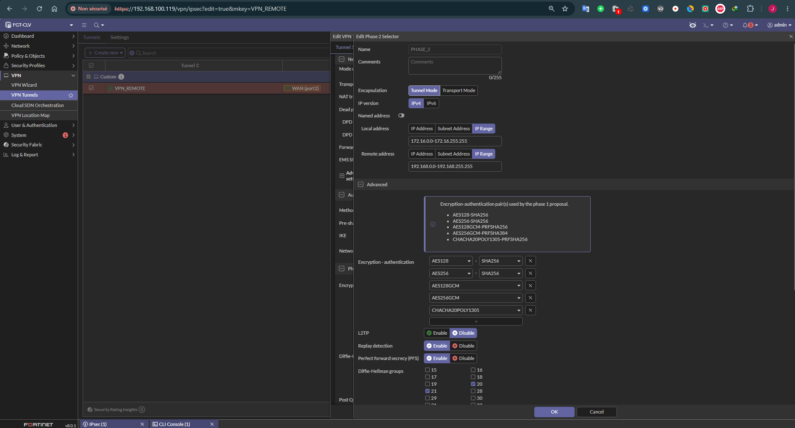
PHASE 2 IPSEC
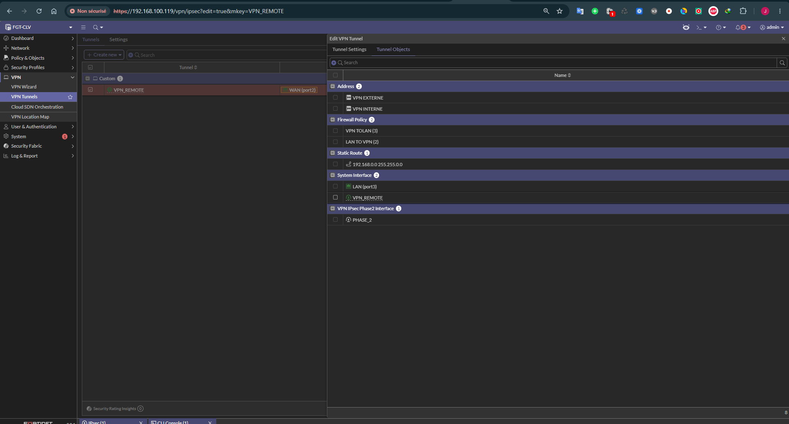
Liste des objets VPN SITE B
Objets d'adresses
Les politiques de pare-feu s'appuient sur deux groupes d'adresses : l'un regroupe les hôtes externes (VPN EXTERNE), l'autre les hôtes internes (VPN INTERNE).
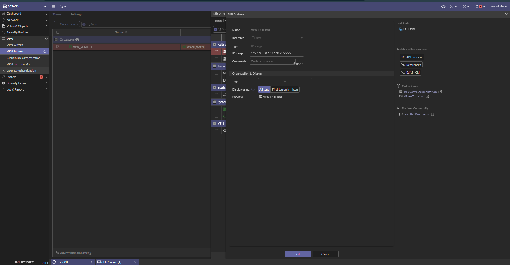
Groupe d’adresse pour les hôtes externes (VPN EXTERNE)
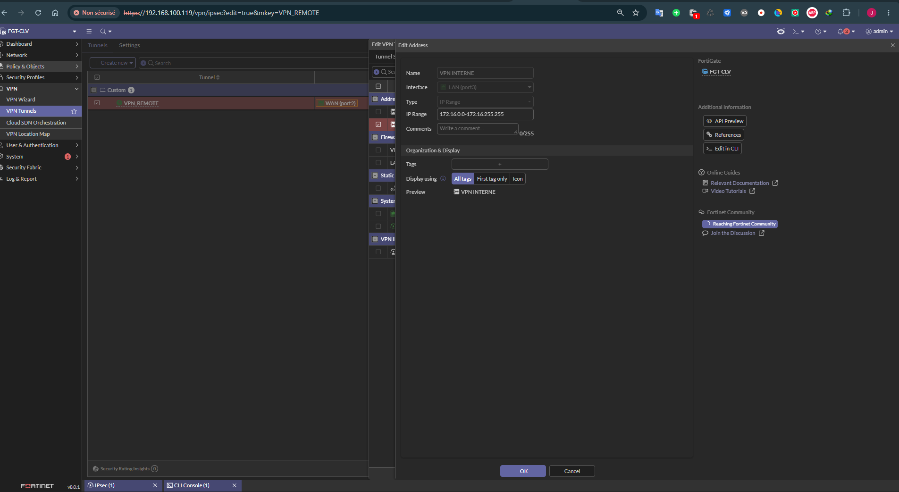
Groupe d’adresse pour les hôtes interne (VPN INTERNE)
Politiques de pare-feu
Deux politiques encadrent le trafic, une pour chaque sens : du tunnel vers le réseau local, puis du réseau local vers le tunnel.
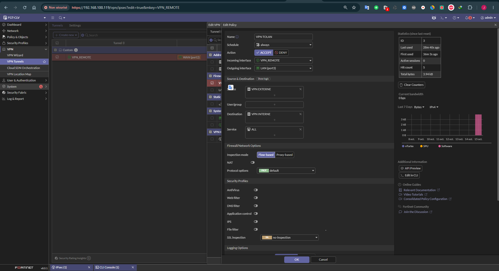
Mise en place de la politique VPN to LAN
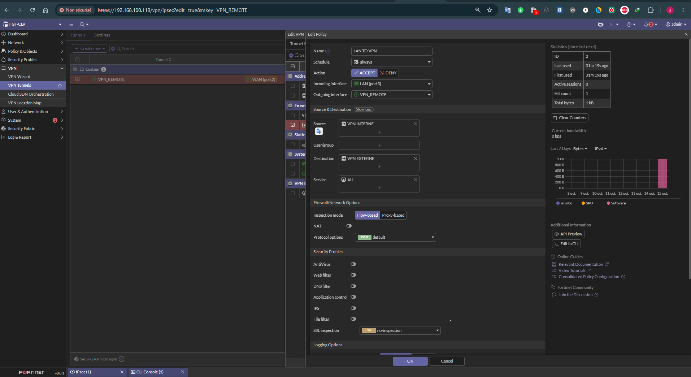
Politique de pare-feu LAN vers VPN : trafic du réseau local à destination du tunnel
Routage du trafic chiffré
Une route est déclarée sur le FortiGate pour acheminer le trafic VPN chiffré.
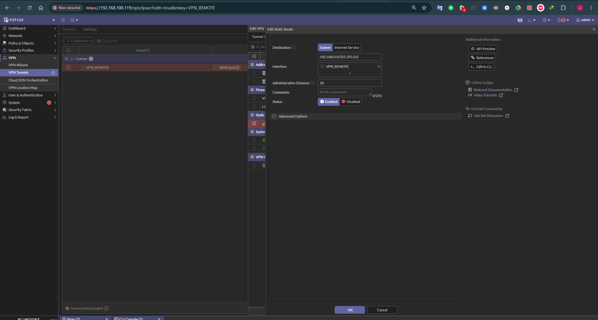
Déclaration de la route par défaut pour le trafic VPN chiffré
Test du tunnel
Un ping est lancé depuis le site B vers 192.168.20.1, la passerelle HSRP du VLAN 20 du site principal, ce qui force le trafic à traverser le tunnel.
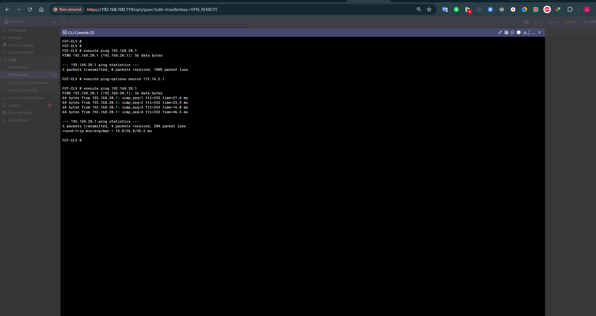
Initiation d’un trafic via le tunnel VPN avec une commande ping vers le réseau 192.168.20.1 depuis le site B
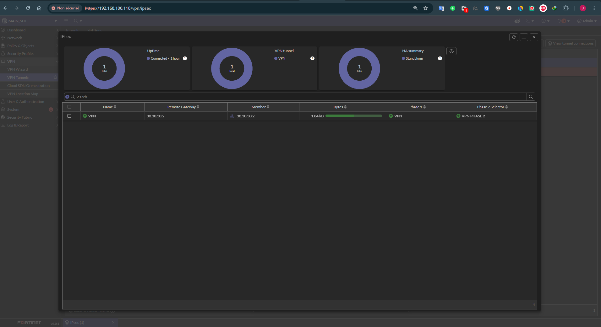
Capture du trafic généré par les ping
Validation
Le fonctionnement du tunnel a été vérifié par des tests de connectivité entre les deux sites :
- ping depuis le FortiGate du site principal, avec comme adresse source son interface LAN
192.168.1.1, vers l'interface LAN du FortiGate distant172.16.2.1; - trafic traversant le tunnel également depuis les routeurs internes, c'est-à-dire sans se limiter au pare-feu lui-même ;
- ping depuis le second site (site B) vers
192.168.20.1, passerelle HSRP du VLAN 20 du site principal, avec capture du trafic généré (voir la section « Test du tunnel » ci-dessus).
Compétences démontrées
- Conception d'un réseau d'entreprise hiérarchique à trois niveaux (accès, distribution, cœur) sur deux sites.
- Segmentation par VLAN et plan d'adressage cohérent entre les deux sites.
- Redondance de passerelle avec HSRP et répartition de charge par VLAN (priorités alternées,
preempt). - Routage OSPF mono-aire avec liens point à point, interfaces passives et propagation d'une route par défaut.
- Mise en place d'un VPN IPsec site-à-site IKEv2 entre deux pare-feu FortiGate et validation du trafic inter-sites.
- Configuration de services DHCP par VLAN sur commutateurs de niveau 3.
Pilotage du projet — méthode d’ingénierie inspirée d’ITIL 4
Comment remplir cette fiche : coche une case uniquement lorsque l’action est réellement réalisée et qu’une preuve est ajoutée. « Configuré » ne veut pas dire « testé ». Cette méthode s’inspire de pratiques ITIL 4 (gestion des changements, incidents, problèmes, configuration et amélioration continue), sans prétendre à une conformité ou certification formelle.
1. Cadrage
- ☐ Décrire le besoin, les utilisateurs/services concernés et le problème à résoudre.
- ☐ Définir périmètre inclus/exclu, hypothèses, versions et limites du laboratoire.
- ☐ Inventorier les composants, ressources matérielles, licences et prérequis.
- ☐ Établir des critères d’acceptation mesurables avant les tests.
- ☐ Identifier les dépendances, risques et points uniques de défaillance (SPOF).
- ☐ Lister les preuves attendues et l’ordre de priorité des travaux.
Livrable : fiche de cadrage, périmètre, critères d’acceptation et registre des risques.
2. Conception
- ☐ Mettre à jour le schéma logique et physique, avec noms/rôles cohérents.
- ☐ Documenter adressage, VLAN, routes, ports, protocoles, flux et dépendances.
- ☐ Vérifier les prérequis et la compatibilité des versions auprès de la documentation du fournisseur.
- ☐ Justifier les choix techniques et consigner les compromis/alternatives.
- ☐ Prévoir sécurité, privilèges minimums, gestion des secrets et accès d’administration.
- ☐ Préparer une matrice de tests : nominal, négatif, panne et reprise.
Livrable : schéma, inventaire, matrice des flux/dépendances et plan de tests.
3. Préparation et gestion du changement
- ☐ Sauvegarder/exporter les configurations et données avant une modification à risque.
- ☐ Capturer l’état initial : versions, états, commandes de contrôle et journaux pertinents.
- ☐ Écrire les étapes d’exécution et les contrôles après chaque étape.
- ☐ Définir le retour arrière et les conditions qui imposent l’arrêt.
- ☐ Modifier une variable à la fois et consigner les résultats.
- ☐ Vérifier le retour à l’état attendu après changement ou rollback.
Livrable : fiche de changement avec impact, risque, plan d’exécution, validation et rollback.
4. Tests et validation
- ☐ Exécuter le scénario nominal de bout en bout depuis un client ou système consommateur.
- ☐ Tester les dépendances et au moins un cas négatif adapté au projet.
- ☐ Simuler une panne contrôlée sans mettre en risque des données ou systèmes hors périmètre.
- ☐ Vérifier journaux, états, compteurs et mesures ; ne pas se fier uniquement à une interface verte.
- ☐ Vérifier la reprise après correction ou retour arrière.
- ☐ Enregistrer chaque test avec résultat attendu, résultat observé, preuve et verdict : Réussi / Échoué / Non testé.
Livrable : matrice de tests et liste des écarts à corriger.
5. Incidents et problèmes
- ☐ Décrire symptôme, impact et heure sans présumer de la cause.
- ☐ Consigner la chronologie et les changements récents.
- ☐ Collecter journaux, commandes de diagnostic, métriques et messages d’erreur.
- ☐ Tester les hypothèses une par une et documenter les preuves.
- ☐ Distinguer contournement, rétablissement et cause racine confirmée.
- ☐ Définir une action préventive : alerte, correction, procédure ou test supplémentaire.
Livrable : fiche d’incident/retour d’expérience. Si aucun incident n’a été testé, écrire « à réaliser » et ne pas inventer de cause racine.
6. Mise en service et exploitation
- ☐ Vérifier les critères d’acceptation et relier chacun à une preuve.
- ☐ Mettre à jour schéma, inventaire, versions, dépendances et configurations de référence.
- ☐ Documenter les commandes de contrôle, les tâches courantes et le dépannage initial.
- ☐ Documenter supervision, sauvegarde/restauration et reprise quand c’est pertinent.
- ☐ Lister les limites du laboratoire, risques résiduels et prérequis de production.
- ☐ Contrôler qu’aucun mot de passe, jeton ou donnée confidentielle n’est publié.
Livrable : dossier d’exploitation court et liste des limites connues.
7. Amélioration continue
- ☐ Résumer ce qui fonctionne et citer les preuves qui le démontrent.
- ☐ Lister tests non réalisés, échecs, défauts et dettes techniques.
- ☐ Décrire la principale leçon apprise et la cause racine seulement si elle est confirmée.
- ☐ Prioriser trois améliorations selon le risque réduit et l’effort nécessaire.
- ☐ Définir la prochaine action concrète et les preuves à ajouter au portfolio.
Livrable : bilan et plan d’amélioration priorisé.
Critères spécifiques — VPN IPsec IKEv2, OSPF et HSRP
- ☐ Vérifier les paramètres IKEv2/IPsec, propositions cryptographiques, identités, selectors, interfaces WAN et règles de pare-feu sans publier de secrets.
- ☐ Prouver l’établissement du tunnel et les compteurs de trafic chiffré/déchiffré.
- ☐ Valider la connectivité de bout en bout entre sous-réseaux représentatifs des deux sites, dans les deux sens, y compris le chemin retour.
- ☐ Vérifier le routage OSPF (voisins, routes, annonces) et confirmer que seuls les préfixes prévus sont propagés.
- ☐ Tester les VLAN, passerelles HSRP, tracking/priorités si configurés et l’accès inter-VLAN.
- ☐ Simuler séparément la perte du tunnel, d’un lien LAN et d’un commutateur de distribution ; vérifier la convergence et le rétablissement.
- ☐ Tester un flux qui doit être refusé et confirmer le résultat dans les logs/règles appropriés.
- ☐ Produire une chronologie de panne et une matrice flux source/destination, résultat attendu/observé.
Contrôle de clôture — à remplir après les tests
- Tests réussis : ___ / ___
- Tests échoués : ___
- Tests non réalisés : ___
- Panne contrôlée testée : Oui / Non
- Rétablissement/rollback/restauration prouvé : Oui / Non / Sans objet
- Schéma et procédures à jour : Oui / Non
- Limites et risques résiduels documentés : Oui / Non
- Décision : Livré techniquement / En cours / À corriger / Revue nécessaire
- Prochaine action concrète : ___
Règle de statut : « Livré » décrit un périmètre réellement implémenté et testé. Les cases encore vides restent des actions ouvertes ; elles ne doivent pas être présentées comme des réalisations.